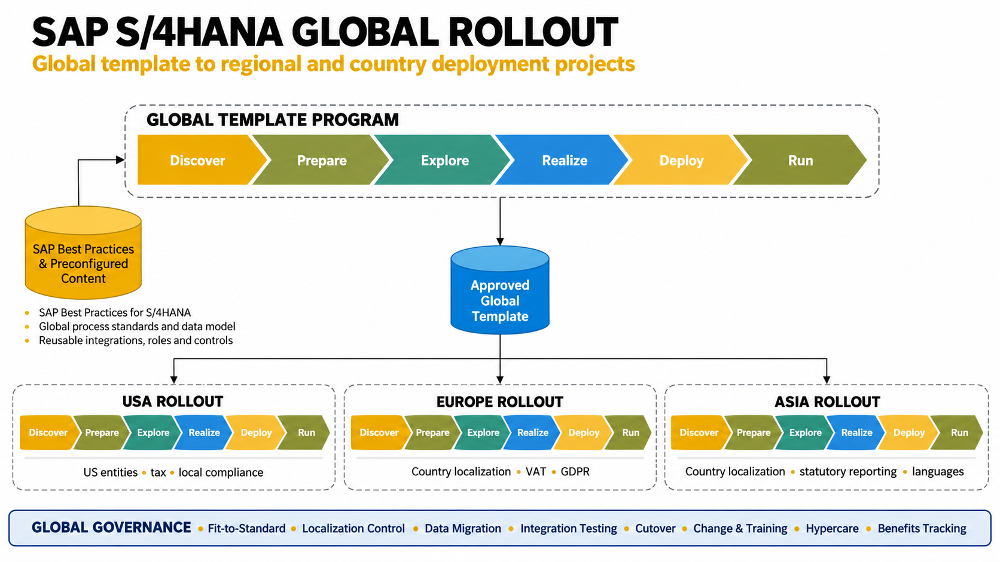

SAP S/4HANA Global Rollout
Scaling a governed global template across the USA, Europe and Asia through controlled localization, phased deployment waves and consistent business outcomes.

Global rollout blueprint: establish the approved template first, then deploy it through regional and country waves with shared governance.
1. Definition
A SAP S/4HANA global rollout program implements a common enterprise solution across multiple regions, legal entities and countries. The program defines a globally governed template for core processes, data, security, integrations and reporting, then deploys it to each location with only justified local changes.
The objective is not to build three separate regional ERP systems. It is to create a consistent global operating model while meeting local statutory, tax, language, regulatory and business requirements.
USA
Entity and tax configuration, local financial controls, business-specific processes, integrations and reporting requirements.
Europe
Country localization, VAT, statutory reporting, privacy requirements such as GDPR, language and legal-entity differences.
Asia
Local tax and statutory requirements, currencies, languages, regional supply-chain practices and country-specific interfaces.
2. Global Template
The global template is the approved baseline that every rollout wave reuses. It standardizes the processes that should work consistently worldwide and defines how approved exceptions are requested, assessed, tested and maintained.
Template building blocks
- Global process design and fit-to-standard decisions
- Enterprise structure and master-data standards
- Common configuration, roles and authorization principles
- Reusable interfaces, reports, forms and extensions
- Global controls, test assets and cutover approach
Template governance
- Global process owners approve design decisions
- Architecture board controls solution consistency
- Change control assesses cost, risk and wave impact
- Template releases and configuration baselines are versioned
- Lessons from each wave feed the template backlog
Program principle: design once where practical, reuse globally, localize only when there is a validated business, legal, tax or regulatory need.
3. Localization — “The Delta”
The localization delta is the documented difference between the global template and what a country or legal entity must have to operate compliantly and effectively. Each delta should have a clear reason, owner, approval, test evidence and support plan.
| Delta category | Examples | Program control |
|---|---|---|
| Legal and statutory | Local financial statements, statutory books, e-invoicing or country reporting | Validate with local finance, tax and compliance specialists |
| Tax and currency | VAT/GST, withholding tax, exchange rates, local currencies | Country configuration review and end-to-end tax testing |
| Language and documents | Translated labels, forms, invoices and user materials | Translation ownership and business sign-off |
| Interfaces and partners | Local banks, carriers, tax platforms, EDI or legacy systems | Interface inventory, ownership, certification and monitoring |
| Business operating model | Local approval limits, warehouse processes or permitted variations | Fit-to-standard review; avoid unnecessary customization |
| Privacy and security | Data access, retention, privacy and local control obligations | Security/privacy assessment and evidence of compliance |
Use a delta register to record the requirement, reason, global-template impact, effort, risk, decision authority, delivery wave and acceptance evidence. Do not treat every country preference as a mandatory customization.
4. Phased Waves
After the template is validated and approved, deployment is sequenced into manageable regional or country waves. The exact order should be based on business readiness and risk—not geography alone.
Wave 0 — Global Template
Confirm global processes, architecture, data standards, integrations, controls, test packs and rollout playbook. Approve entry criteria before country deployment.
Wave 1 — Pilot Country
Deploy to a representative entity, validate localization and operating procedures, measure readiness, then capture lessons before scaling.
Waves 2+ — Regional Scale
Roll out to USA, Europe and Asia in sequenced country groups. Reuse the template and delivery assets while managing each country's approved delta.
Wave readiness gates: design and delta approval, clean master data, integration readiness, business process testing, user training, cutover rehearsal, support coverage and formal go/no-go approval.
5. Key Phases — SAP Activate / Standard Rollout
SAP Activate commonly uses Discover, Prepare, Explore, Realize, Deploy and Run. For a global rollout, the program applies these phases to template creation and then tailors the rollout work for each wave. Run operations and continuous improvement continue after go-live.
Discover
Confirm business case, transformation goals, scope, deployment options, high-level roadmap and initial risks.
Prepare
Mobilize governance, teams, environments, plan, ways of working, data strategy and rollout standards.
Explore
Run fit-to-standard workshops, define global processes, identify localization deltas and approve solution design.
Realize
Configure and extend the solution; build interfaces, migrate data, execute testing and resolve defects.
Deploy
Complete cutover rehearsals, business readiness, training, go/no-go, production deployment and stabilization.
Run
Transition to support, monitor service levels and business KPIs, close residual issues and improve the template.
| Workstream | Core deliverables | Typical acceptance evidence |
|---|---|---|
| Process and solution | Global process model, fit-to-standard decisions, delta register | Process-owner and design-authority sign-off |
| Data migration | Data mapping, cleansing, mock loads, reconciliation and ownership | Approved reconciliation and data-quality thresholds |
| Integration and testing | Interface catalogue, integration tests, end-to-end and regression packs | Critical scenarios passed; no open go-live-blocking defects |
| Change and training | Stakeholder impact assessment, communications, role-based training | Readiness assessment and training completion evidence |
| Cutover and support | Cutover runbook, rollback/contingency plan, hypercare and support model | Rehearsal sign-off, go/no-go decision and support acceptance |
6. Common Challenges
Use process-owner decisions and a transparent delta approval process. Reject customization that does not have a justified legal or business case.
Maintain an integrated master schedule across waves, identify shared resources and interfaces, and make dependencies visible in program governance.
Assign business data owners, define global standards, run repeated mock migrations and reconcile critical balances and records before cutover.
Inventory global and local interfaces, agree ownership and service expectations, and test complete business flows—not just individual connections.
Use local change champions, role-based training, translated materials and readiness checks that reflect each site's actual operating model.
Control configuration and code baselines, assess template changes for every active wave, and publish release notes with regression impacts.
Rehearse migration and business-critical scenarios, confirm decision rights and contingency plans, and staff hypercare against forecast demand.
7. Program Manager's Responsibilities
Strategy and governance
- Align global scope, outcomes, funding and roadmap with executive sponsors
- Establish steering committee, design authority, country leads and escalation paths
- Manage RAID, decisions, dependencies, scope and change control
- Track benefits, costs, forecast and business-case assumptions
Template and localization control
- Secure global process-owner sign-off and template baseline approval
- Govern the delta register and prevent uncontrolled customization
- Coordinate architecture, security, tax, legal and compliance decisions
- Ensure template changes are assessed against all rollout waves
Wave delivery and readiness
- Manage integrated plans, critical path, capacity and vendor commitments
- Set entry/exit criteria and stage gates for every country wave
- Oversee migration, integration, UAT, regression and cutover rehearsals
- Drive go/no-go decisions using evidence and agreed risk thresholds
People, adoption and value
- Align global and local stakeholders across time zones and cultures
- Coordinate communications, training, adoption and business readiness
- Ensure hypercare, service transition and ownership are established
- Track benefits realization and feed lessons learned into later waves
Program Governance and Performance Measures
KPIs and targets should be baselined with sponsors and business owners. Avoid presenting illustrative measures as achieved project results.
Program Management Takeaway
A successful SAP S/4HANA global rollout balances global consistency with controlled local flexibility. The Program Manager creates the conditions for repeatable delivery: a trusted global template, clear decision rights, transparent localization, reliable data and integration, evidence-based wave gates, and sustained business adoption. Each rollout should become more predictable by reusing proven assets and applying lessons learned—while protecting compliance and business continuity in every country.
Portfolio case study. This is a reference program scenario for demonstrating SAP global rollout and program management practices; it does not claim to describe a named customer's implementation.